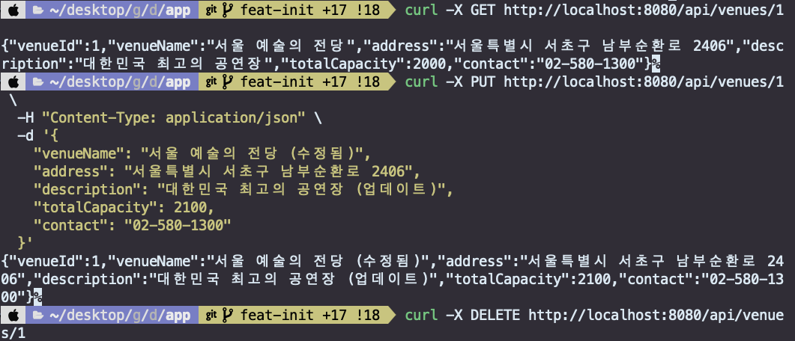
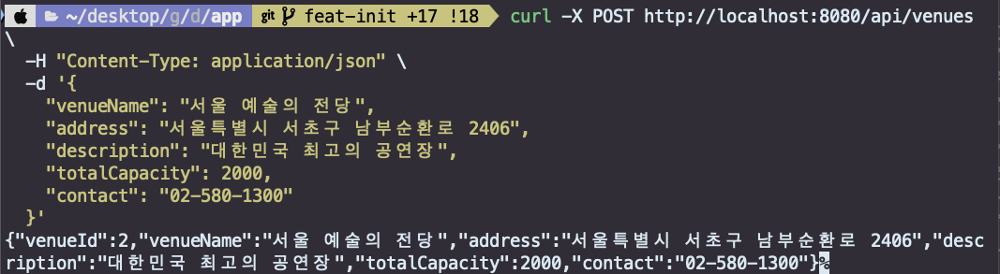

[실습] test CRUD controller 만들기
목적
Spring Boot와 JPA를 활용한 CRUD(Create, Read, Update, Delete) RESTful API 개발 과정을 실습을 통해 익힐 수 있습니다.
- Spring Boot 아키텍처 이해 (Entity, repository, service, controller 계층)
- RESTful API 설계 원칙 습득 (Http 메서드, 상태코드)
- H2 인메모리 데이터베이스를 활용한 개발 환경 최적화
Prerequisite
- 02-springboot에서 진행한 세팅 완료
folder structure
.
├── build.gradle
├── compose.yaml
├── gradlew
├── gradlew.bat
├── settings.gradle
└── src
├── main
│ ├── java
│ │ └── org
│ │ └── ddcn41
│ │ └── ticketing_system
│ │ ├── config
│ │ │ └── SecurityConfig.java
│ │ ├── controller
│ │ │ └── VenueController.java
│ │ ├── dto
│ │ │ └── VenueDto.java
│ │ ├── entity
│ │ │ ├── Booking.java
│ │ │ ├── BookingSeat.java
│ │ │ ├── Payment.java
│ │ │ ├── Performance.java
│ │ │ ├── PerformanceSchedule.java
│ │ │ ├── Refund.java
│ │ │ ├── ScheduleSeat.java
│ │ │ ├── SeatLock.java
│ │ │ ├── SystemMetric.java
│ │ │ ├── User.java
│ │ │ ├── Venue.java
│ │ │ └── VenueSeat.java
│ │ ├── repository
│ │ │ └── VenueRepository.java
│ │ ├── service
│ │ │ └── VenueService.java
│ │ └── TicketingSystemApplication.java
│ └── resources
│ ├── application.yml
│ ├── data.sql
API 작성
Entity 작성
- @Entity: JPA 엔티티임을 명시
- @Table(name = "venues"): 테이블 명을 실세 데이터베이스와 동일하게 명시적으로 지정
- Lombok 어노테이션: 보일러플레이트 코드를 자동 생성
- @CreationTimestamp/@UpdateTimestamp: 생성/수정 시간을 자동으로 관리
- 제약조건: nullable, length 등으로 데이터 무결성을 보장
package org.ddcn41.ticketing_system.entity;
@Entity
@Table(name = "venues")
@Data
@NoArgsConstructor
@AllArgsConstructor
@Builder
public class Venue {
@Id
@GeneratedValue(strategy = GenerationType.IDENTITY)
@Column(name = "venue_id")
private Long venueId;
@Column(name = "venue_name", nullable = false)
private String venueName;
@Column(columnDefinition = "TEXT")
private String address;
@Column(columnDefinition = "TEXT")
private String description;
@Column(name = "total_capacity", nullable = false)
@Builder.Default
private Integer totalCapacity = 0;
@Column(length = 100)
private String contact;
@CreationTimestamp
@Column(name = "created_at")
private LocalDateTime createdAt;
@UpdateTimestamp
@Column(name = "updated_at")
private LocalDateTime updatedAt;
@OneToMany(mappedBy = "venue", cascade = CascadeType.ALL)
private List<Performance> performances;
@OneToMany(mappedBy = "venue", cascade = CascadeType.ALL)
private List<VenueSeat> venueSeats;
}
Repository & DTO 작성
- VenueRepository.java
- Spring Data JPA의 기능을 활용하여 데이터 접근 계층을 구현
- @Repository: Spring Framework에서 제공하는 데이터 접근 계층(DAO - Data Access Object)을 나타냄
package org.ddcn41.ticketing_system.repository;
@Repository
public interface VenueRepository extends JpaRepository<Venue, Long> {
// 추가적인 쿼리 메소드들이 필요하면 여기에 추가
}
- VenueDto.java
- 클라이언트와 서버 간 데이터 전송을 위한 DTO 클래스를 정의
package org.ddcn41.ticketing_system.dto;
@Data
@NoArgsConstructor
@AllArgsConstructor
@Builder
public class VenueDto {
private Long venueId;
private String venueName;
private String address;
private String description;
private Integer totalCapacity;
private String contact;
}
Service 작성
비즈니스 로직을 담당하는 Service 계층
package org.ddcn41.ticketing_system.service;
@Service
@RequiredArgsConstructor
@Transactional(readOnly = true)
public class VenueService {
private final VenueRepository venueRepository;
// 모든 공연장 조회
public List<VenueDto> getAllVenues() {
return venueRepository.findAll().stream()
.map(this::convertToDto)
.collect(Collectors.toList());
}
// 공연장 ID로 조회
public VenueDto getVenueById(Long venueId) {
Venue venue = venueRepository.findById(venueId)
.orElseThrow(() -> new RuntimeException("Venue not found with id: " + venueId));
return convertToDto(venue);
}
// 공연장 생성
@Transactional
public VenueDto createVenue(VenueDto venueDto) {
Venue venue = Venue.builder()
.venueName(venueDto.getVenueName())
.address(venueDto.getAddress())
.description(venueDto.getDescription())
.totalCapacity(venueDto.getTotalCapacity())
.contact(venueDto.getContact())
.build();
Venue savedVenue = venueRepository.save(venue);
return convertToDto(savedVenue);
}
// 공연장 수정
@Transactional
public VenueDto updateVenue(Long venueId, VenueDto venueDto) {
Venue venue = venueRepository.findById(venueId)
.orElseThrow(() -> new RuntimeException("Venue not found with id: " + venueId));
venue.setVenueName(venueDto.getVenueName());
venue.setAddress(venueDto.getAddress());
venue.setDescription(venueDto.getDescription());
venue.setTotalCapacity(venueDto.getTotalCapacity());
venue.setContact(venueDto.getContact());
Venue updatedVenue = venueRepository.save(venue);
return convertToDto(updatedVenue);
}
// 공연장 삭제
@Transactional
public void deleteVenue(Long venueId) {
if (!venueRepository.existsById(venueId)) {
throw new RuntimeException("Venue not found with id: " + venueId);
}
venueRepository.deleteById(venueId);
}
// Entity를 DTO로 변환
private VenueDto convertToDto(Venue venue) {
return VenueDto.builder()
.venueId(venue.getVenueId())
.venueName(venue.getVenueName())
.address(venue.getAddress())
.description(venue.getDescription())
.totalCapacity(venue.getTotalCapacity())
.contact(venue.getContact())
.build();
}
}
Controller 작성
RESTful API 엔드포인트를 제공하는 Controller 계층
package org.ddcn41.ticketing_system.controller;
@RestController
@RequestMapping("/api/venues")
@RequiredArgsConstructor
public class VenueController {
private final VenueService venueService;
// 모든 공연장 조회
@GetMapping
public ResponseEntity<List<VenueDto>> getAllVenues() {
List<VenueDto> venues = venueService.getAllVenues();
return ResponseEntity.ok(venues);
}
// 특정 공연장 조회
@GetMapping("/{venueId}")
public ResponseEntity<VenueDto> getVenueById(@PathVariable Long venueId) {
VenueDto venue = venueService.getVenueById(venueId);
return ResponseEntity.ok(venue);
}
// 공연장 생성
@PostMapping
public ResponseEntity<VenueDto> createVenue(@RequestBody VenueDto venueDto) {
VenueDto createdVenue = venueService.createVenue(venueDto);
return ResponseEntity.status(HttpStatus.CREATED).body(createdVenue);
}
// 공연장 수정
@PutMapping("/{venueId}")
public ResponseEntity<VenueDto> updateVenue(@PathVariable Long venueId, @RequestBody VenueDto venueDto) {
VenueDto updatedVenue = venueService.updateVenue(venueId, venueDto);
return ResponseEntity.ok(updatedVenue);
}
// 공연장 삭제
@DeleteMapping("/{venueId}")
public ResponseEntity<Void> deleteVenue(@PathVariable Long venueId) {
venueService.deleteVenue(venueId);
return ResponseEntity.noContent().build();
}
}
API 호출
curl -X POST http://localhost:8080/api/venues \
-H "Content-Type: application/json" \
-d '{
"venueName": "서울 예술의 전당",
"address": "서울특별시 서초구 남부순환로 2406",
"description": "대한민국 최고의 공연장",
"totalCapacity": 2000,
"contact": "02-580-1300"
}'
curl -X GET http://localhost:8080/api/venues
curl -X PUT http://localhost:8080/api/venues/1 \
-H "Content-Type: application/json" \
-d '{
"venueName": "서울 예술의 전당 (수정됨)",
"address": "서울특별시 서초구 남부순환로 2406",
"description": "대한민국 최고의 공연장 (업데이트)",
"totalCapacity": 2100,
"contact": "02-580-1300"
}'
curl -X DELETE http://localhost:8080/api/venues/1
실행 화면
 
Trouble Shooting
H2 데이터베이스에서 테이블이 자동 생성되지 않아 빌드마다 입력이 필요함
- 애플리케이션 재시작 시마다 H2 인메모리 데이터베이스의 테이블이 사라짐
- JPA의 ddl-auto 설정만으로는 복잡한 테이블 구조와 인덱스가 제대로 생성되지 않음
- 매번 수동으로 테이블을 생성해야 하는 번거로움 발생
해결
application.yaml에 h2 설정을 수정하고, resources에 sql 문을 미리 정의하여 둔다. 이렇게 하면 로컬에서 개발을 빠르게 진행하고, 추후 클라우드로 옮겨 같은 코드를 그대로 유지/개발할 수 있다.
References
Restful API guide
- https://restfulapi.net/http-status-codes/
- Building a RESTful Web Service https://spring.io/guides/gs/rest-service
Spring Data JPA
- spring data JPA https://docs.spring.io/spring-data/jpa/reference/index.html
Spring Web MVC
- Annotated Controllers https://docs.spring.io/spring-framework/reference/web/webmvc/mvc-controller.html
- Mapping Request https://docs.spring.io/spring-framework/reference/web/webmvc/mvc-controller/ann-requestmapping.html
Lombok
- @Data annotation: https://projectlombok.org/features/Data
- @Builder annotation: https://projectlombok.org/features/Builder
HTTP Status Codes
- HTTP Status Code Reference https://developer.mozilla.org/en-US/docs/Web/HTTP/Reference/Status